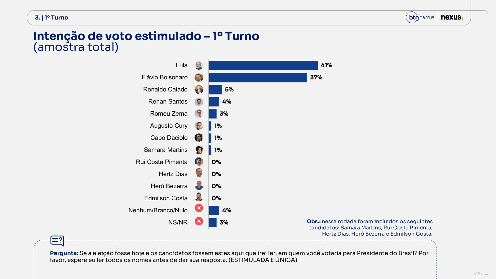
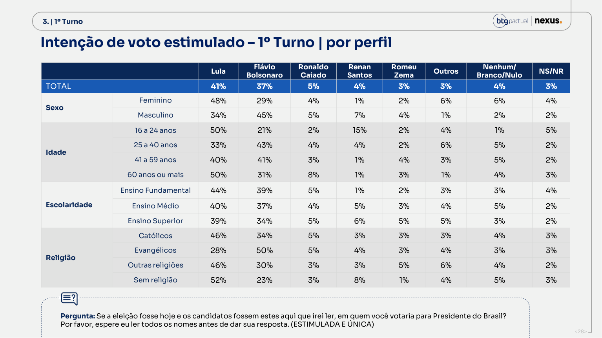
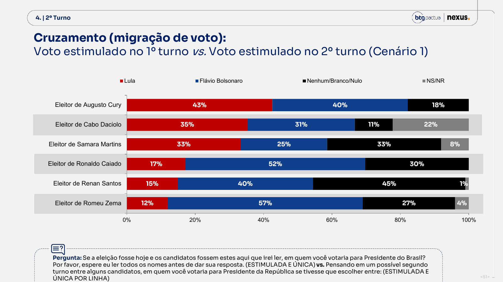
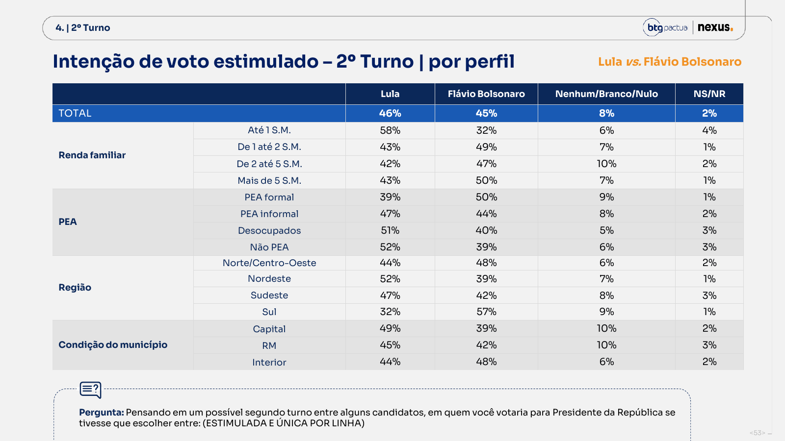
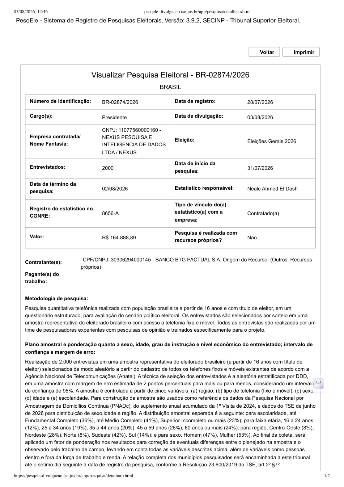
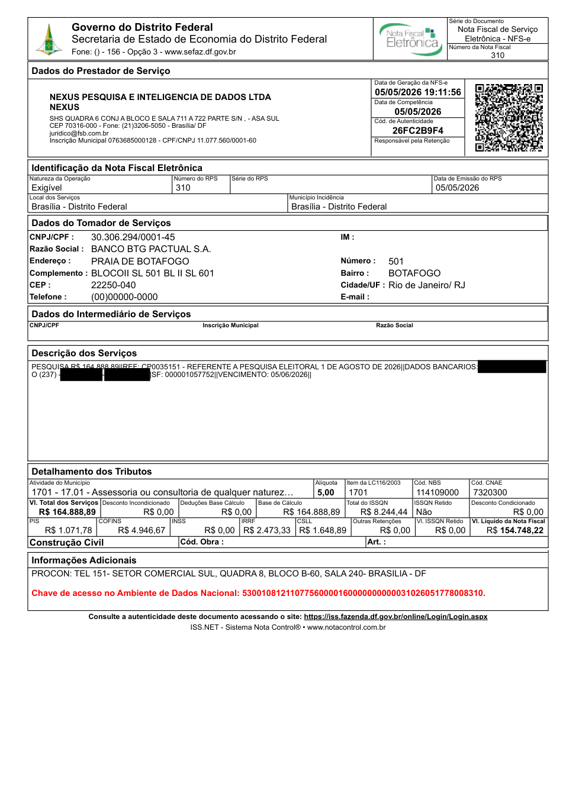

Primeiro turno, oito rodadas
Percentuais publicados. A diferença caiu de 9 pontos em 27/07 para 4 em 03/08.
Lula 41, Flávio Bolsonaro 37. No segundo turno, 46 a 45. A oitava rodada fechou as duas bocas da disputa. O movimento existe, mas cabe inteiro dentro da incerteza.
O salto de Flávio aparece no estimulado e no espontâneo. A série sustenta a palavra “reação”, não sustenta uma virada.
Percentuais publicados. A diferença caiu de 9 pontos em 27/07 para 4 em 03/08.
Lula 46, Flávio 45. A margem aproximada do contraste é ±4,18 pontos sob amostra aleatória simples.
Ficou estável. Flávio foi de 27 para 28. O espontâneo confirma melhora curta, não uma onda nova.
Eram 73% em 27 de julho. Lula marca 81% de certeza; Flávio, 80%. Os dois núcleos endureceram.
O intervalo aproximado do gap de 4 pontos cruza zero. O efeito de desenho não foi publicado.

Lula recuou 1 ponto no primeiro turno e 1 no segundo. Flávio avançou 4 e 2. O combustível veio sobretudo dos homens, do Nordeste e da consolidação do eleitor anti-Lula.
Flávio foi de 39% para 45%. Entre mulheres, foi de 28% para 29%.
Flávio passou de 24% para 34%. Lula caiu de 57% para 48%.
Flávio foi de 17% para 27% no cluster analítico; Lula caiu de 31% para 25%.
Flávio chega a 41%. Lula marca 40%. Nas capitais, Lula vence por 44% a 29%.
Entre as duas ondas, católicos foram de 53% para 48% da amostra e evangélicos de 25% para 30%. Toda margem controlada por cota ou peso está congelada dígito por dígito. A que mais se moveu é a de maior gradiente político do relatório, e não é cota, não é alvo de peso e não é comentada.
As próprias respostas de agosto, pesadas pela composição religiosa de julho, dariam 2,8 pontos de vantagem no segundo turno, não 1. Só a troca de composição vale −2,57 pontos.
Lula 28% e Flávio 50% no primeiro turno, idênticos nas duas ondas. O ganho de Flávio veio de católicos (27% para 34%) e da troca de 5 pontos de católico por evangélico na amostra.
Sob amostra aleatória simples, a mudança evangélica tem p=0,0004. Seria preciso um efeito de desenho de 3,3 para virar ruído, e o instituto não publica efeito de desenho nenhum.

uncontrolled.religion no JSON da auditoria.A amostra publicada comprime os extremos de renda. Ao trocar apenas essa distribuição pela PNAD Contínua anual 2025, mantendo as respostas da própria Nexus, o segundo turno passa de Lula +1 para Flávio +1,7.
Renda efetiva domiciliar em salários mínimos. Pesos V1032 e 200 réplicas na PNAD.
| Cenário | Lula | Flávio | Gap |
|---|---|---|---|
| Publicado | 46,0 | 45,0 | +1,0 |
| Renda PNAD | 44,7 | 46,4 | −1,7 |
| Sexo TSE | 46,0 | 45,0 | +0,9 |
| Idade TSE | 46,0 | 45,0 | +1,0 |
| Região TSE | 45,9 | 45,1 | +0,8 |
A PNAD encontra 13,50% ±0,25. A amostra tem 8,5 pontos a mais no grupo em que Lula vence por 58% a 32% no segundo turno.
A PNAD encontra 25,33% ±0,53. Nesse grupo, Flávio vence por 50% a 43%.
A mesma troca reduz Lula 41 x 37 para 39,7 x 38,3. Não vira o primeiro turno, mas quase apaga a vantagem.
A PNAD encontra 24,2%: o segmento mais lulista da tabela (47 x 44 no 2º turno) está sub-representado em 30%. O formal, mais bolsonarista, tem 43% contra 36,8% reais. Reponderar essa margem abre a vantagem de 1,0 para 1,8.
Caiado, Renan, Zema, Cury e Daciolo somam 14 pontos. Flávio precisaria de cerca de 9,5 deles para cruzar 50% dos votos válidos. As transferências publicadas apontam algo perto da metade, não dos dois terços necessários.
É o teto aritmético disponível hoje, antes de considerar perdas e branco/nulo.
Parcela aproximada desse pool que Flávio teria de absorver para vencer no primeiro turno.
Ganho de Flávio fora da base própria dividido pelo ganho de Lula. Era 2:1 em 27/07.

Lula vence entre mulheres por 48% a 29% no primeiro turno e 54% a 37% no segundo. A vantagem quase não mudou. A PNAD ajuda a decompor condições domiciliares; não mede voto, religião ou persuasibilidade.
Mesmo gap de 27 de julho. Lula e Flávio subiram 1 ponto entre mulheres.
Era +18 na rodada anterior. A oscilação é mínima perto da margem do estrato.
Entre homens, 39%. A avaliação do governo acompanha a escolha eleitoral, sem provar causa.
Contra Flávio, Zema, Caiado e Renan, Lula marca os mesmos 54% entre mulheres. O muro não é elasticidade de Lula: é o campo adversário que não retém voto feminino quando troca de nome.
Contra 42% entre homens. Lula inverte: 40% entre mulheres, 59% entre homens. A eleição é um referendo de sexo nas duas direções.
Potencial de voto entre mulheres: 39%, dois pontos acima do que ele já tira no segundo turno. Dentro desta amostra, não há folga feminina a converter.
Universo: mulheres de 16 anos ou mais. “Com menor” significa presença de pessoa abaixo de 18 anos no domicílio; não significa maternidade comprovada.
PNAD Contínua anual 2025 (1ª visita) e trimestral 1T/2026. Mais escolarizada, mais pobre, mais chefe de família: 13,7% das mulheres adultas recebem Bolsa Família em nome próprio, contra 1,8% dos homens.
Renda domiciliar per capita a preços de abril/2026. A nordestina vive com 54% da renda média da sulista; o Nordeste concentra 26,8% das mulheres adultas do país.
No primeiro turno, a vantagem de Lula caiu de 33 para 14. No segundo, de 32 para 13. É o maior deslocamento regional da rodada e também o que mais pede cautela.
Era 57 x 24. Lula −9, Flávio +10.
Era 62 x 30. Lula −10, Flávio +9.
Lula mantém 7 pontos. No segundo turno, 47 x 42.
Flávio amplia a maior vantagem regional. No segundo turno, 57 x 32.

A Nexus chama de “bolsonarista convicto” um cluster criado por notas de sentimento contra Lula e contra Bolsonaro e sua família. O rótulo não vem de uma pergunta positiva de identidade, e os pontos de corte não foram publicados.
Eram 20% em 27/07. A estabilidade sugere que o paradoxo pertence ao construto, não a uma súbita migração.
Lula 25, Flávio 27. Renan aparece com 16. É o espaço menos consolidado do relatório.
A soma dos seis segmentos deixa 5% fora. A regra de classificação completa não aparece no relatório.
Com 1% de intenção (~20 entrevistados), Daciolo recebe um gráfico de certeza de voto de 17% x 83%. Os 17% são cerca de três pessoas. Samara Martins, também com 1%, não aparece: o critério não é explicado.
Para desocupados. A p. 12 imprime "11% de bolsonaristas convictos" nesse grupo, contra 29% nacional, sem repetir a ressalva. A p. 114 não cobre nenhum dos seis clusters.
A última pergunta de toda entrevista é cor ou raça, nas duas ondas. Nos 236 páginas dos dois relatórios: zero ocorrências. Coletada sempre, publicada nunca, inauditável por consequência.
As faixas declaradas no registro somam 101, arredondando para cima as duas faixas mais velhas, onde Lula vence. Pequeno e provavelmente inócuo; publicado pelo mesmo padrão simétrico de prova.
Renan tem 47% de desconhecimento e 28% de rejeição bruta. Entre quem consegue avaliá-lo, sua rejeição estimada chega a 54%, a maior do grupo. A falta de conhecimento não é reserva automática.
Os dois têm a mesma rejeição bruta. Lula possui 36% de voto único; Flávio, 28%.
Conta descritiva: 28 dividido por 52 avaliáveis. O arredondamento e o denominador não publicado limitam a precisão.
Outros 6% declaram potencial de votar em ambos. A polarização deixa uma faixa pequena, mas real, de permeabilidade.
37% positiva, 18% regular, 43% negativa. A aprovação nominal fica em 47%, contra 48% de desaprovação.
Entre os que aprovam, 89% escolhem Lula no segundo turno e 7% Flávio. Entre os que desaprovam, 4% Lula e 83% Flávio.
Segurança 30%, saúde 23%, corrupção 19%, política 17%, educação 15%. Eleitores de Flávio priorizam segurança; os de Lula, saúde e educação.
Isso descreve agendas agregadas. Não autoriza mensagens persuasivas individualizadas por religião, sexo ou composição familiar.
A unidade primária é o telefone gerado por Random Digit Dialing. O relatório informa quotas e calibração, mas não publica taxa de contato, elegibilidade, resposta, distribuição dos pesos ou efeito de desenho.
Entre 819 em julho e 748 em agosto.
Menos da metade dos municípios da onda atual estava na anterior.
Outros 482 saíram. A rotação territorial foi grande.
Maior concentração bruta atual, contra 108 entrevistas na rodada anterior.
Com n = 2.002, a margem mínima é ±2,19 mesmo sob amostra aleatória simples, não os ±2 da capa. Só a calibração geográfica já a leva a ±2,23; as demais margens de peso só aumentam.
Contra o eleitorado do TSE, com 26 graus de liberdade (crítico a 5%: 38,9; p = 0,0018). Em julho, 214,0. O Maranhão fica em 0,35x e 0,50x da sua fatia do eleitorado nas duas ondas.
A região recebeu 24,6% e 25,1% das entrevistas de campo e aparece com 28% no perfil final. Cerca de 3 pontos do Nordeste do relatório são produzidos por ponderação, exatamente onde está o salto de 19 pontos.
A dispersão das oito ondas implica deff de 0,37 (série de cluster lisa demais) a 5,55 (comparecimento). Um único ±2 não descreve as duas pontas.
O registro afirma que "cada número telefônico elegível possui probabilidade conhecida de ser selecionado". O relatório, p. 4, diz que a amostra foi definida por cotas de sexo, idade, escolaridade, tipo de telefonia e DDD. Cota interrompe a seleção quando o estrato enche e a probabilidade deixa de ser conhecida: os dois textos não são compatíveis, e as listas de controle divergem entre si (o TSE lista região; o relatório, DDD).
A metodologia declara PNADC anual 2024, 1ª visita. Em agosto de 2026, a PNAD anual 2025 já estava publicada. Nossa sensibilidade usa a base de 2025 e mantém o mesmo conceito de renda efetiva domiciliar. O bruto regional confirma a calibração em ação: Nordeste 25,1% em campo, 28% no perfil; Sul 15,6% bruto, 14% ponderado.

A nota fiscal da rodada, depositada no TSE, foi emitida em 5 de maio de 2026, com vencimento em 5 de junho, para a "pesquisa eleitoral 1 de agosto de 2026". O campo só aconteceu de 31/07 a 02/08.
R$ 164.888,89, tomador Banco BTG Pactual, gerada às 19:11 de 5 de maio. O mesmo valor aparece na declaração do estatístico de julho: preço unitário idêntico entre rodadas.
A declaração do estatístico das duas ondas é assinada com ICP-Brasil três dias antes de o campo começar (21/07 e 28/07). A regra do TSE exige registro prévio, então a antecedência é estrutural. O que falta é o ato inverso: nenhum documento posterior confirma que o campo declarado foi o realizado.
O e-mail do prestador na nota é juridico@fsb.com.br e o questionário registrado traz o timbre "FSB holding" ao lado de "nexus.". O vínculo Nexus/FSB, holding com contratos de publicidade federal, deixa de ser contexto e passa a ser documento primário no tribunal.

A conta foi construída para separar o que a Nexus mediu do que esta auditoria estima.
As barras e margens vêm dos relatórios de 27/07 e 03/08.
Crosstabs e cenários alternativos restringem o modelo.
Fidelidade de bases, migração ideológica e branco/nulo são hipóteses declaradas.
O ajuste de mínima divergência bate exatamente as margens publicadas.
A razão agregada é robusta; cada fita depende da prior e não descreve indivíduos.
A cédula estimulada foi de 7 para 12 nomes; a bateria de rejeição, de 7 para 5. Cury e Daciolo podem receber voto, mas não podem mais receber rejeição, sem nota de critério. Saíram a segunda opção de voto, a motivação do 2º turno, o voto ideal x útil, o "contra quem" e o bloco do tarifaço; entraram cinco blocos de atribuição de responsabilidade ao governo. A rodada perdeu os instrumentos que mediam solidez de voto e ganhou os que medem culpa.
O voto segue no início (P2/P3), limpo de efeito de ordem, e a p. 4 de agosto passou a declarar que o relatório reordena as perguntas por eixo temático. O asterisco: a escala anti-Lula/anti-Bolsonaro que define os clusters é a penúltima pergunta e, em agosto, passou a vir depois de cinco blocos sobre culpa do governo. Nessa onda, "bolsonaristas convictos" marcou o máximo da série (29%). Hipótese registrada, sem prova de causa: um split-ballot resolveria.
Relatórios, questionários, registros, municípios e declaração do estatístico foram arquivados por onda. O JSON publicado contém hashes SHA-256 de cada documento.
BR-02874/2026. Campo de 31/07 a 02/08. Contratante BTG Pactual. Valor declarado: R$ 164.888,89.
2.002 eleitores de 16 anos ou mais. CATI com RDD. Margem divulgada de ±2 pontos, 95% de confiança.
Sem microdados, pesos, paradata, bases brutas dos recortes e efeito de desenho, nenhuma auditoria externa reproduz a estimativa integral.
Publicação independente. A Arvor Intelligence não foi contratada por BTG Pactual, Nexus, partido ou candidatura. Resultados de subgrupos são arredondados e têm incerteza maior. Atualizado em 03/08/2026.